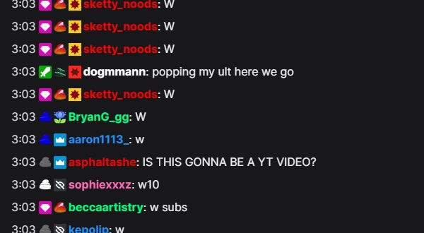

Быстрая настройка
- Откройте настройки расширения или настольного приложения Social Stream Ninja.
- В разделе Основной оверлей чата и док-панель управления (Main chat overlay & control dock), разверните Цвета имён пользователей.
- Включите Создавать цвета для имён без цвета. Сохраняет цвета, переданные платформой чата, и добавляет недостающие.
- Используйте обновлённую ссылку док-панели. Существующие URL док-панели и источника браузера OBS также подойдут, если добавить
&randomcolorи обновить страницы.
Выберите способ окрашивания
Используйте по одному основному цветовому параметру, чтобы результат был предсказуемым.
| Параметр док-панели | Результат | Подходит для |
|---|---|---|
| Создавать цвета для имён без цвета | Сохраняет цвета имён от платформы и назначает постоянный цвет, если он не задан. | Большинство пользователей |
| Создавать цвета для всех имён | Назначает каждому имени постоянный автоматически созданный цвет, заменяя цвета платформы. | Чат со всеми разноцветными именами |
| Использовать цвета имён от источника | Показывает цвет только тогда, когда его передаёт платформа чата. | Платформы с цветами имён, например Twitch |
Автоматически созданные цвета стабильны: док-панель вычисляет хеш идентификатора, имени пользователя или отображаемого имени, поэтому один человек сохраняет цвет. Общие настройки цвета остаются доступны, когда цвета нужно добавлять в исходящие данные и другие интерфейсы.

nameColor значения.Если имена всё ещё одного цвета
- Убедитесь, что один из параметров включён в разделе док-панели Цвета имён пользователей .
- Для платформ без цветов имён выберите Создавать цвета для имён без цвета.
- Убедитесь, что URL док-панели содержит
&color,&randomcolor, или&randomcolorall. - Обновите уже открытые вкладки док-панели или источники «Браузер» OBS.
- Проверьте, нет ли в своём CSS правила, которое принудительно окрашивает все
.hl-nameодним цветом.
Больше возможностей с CSS
Добавьте CSS через настройки док-панели, параметр &css= или &b64css= URL или собственный CSS источника «Браузер» OBS. Используйте !important при переопределении цвета имени, переданного платформой.
Один цвет для всех имён
.hl-name {
color: #ffd166 !important;
}Выберите цвета по платформе
.highlight-chat[data-source-type="youtube"] .hl-name {
color: #ff5a5f !important;
}
.highlight-chat[data-source-type="twitch"] .hl-name {
color: #b794f4 !important;
}
.highlight-chat[data-source-type="kick"] .hl-name {
color: #53fc18 !important;
}Выделите модераторов и VIP
.highlight-chat.mod .hl-name {
color: #5eead4 !important;
}
.highlight-chat.vip .hl-name {
color: #f472b6 !important;
}CSS позволяет надёжно выбирать платформу или роль, но стандартная док-панель не добавляет имя пользователя как класс или атрибут CSS. Для фиксированных цветов отдельных людей используйте встроенные автоматически создаваемые цвета либо собственный оверлей с сопоставлением имён и цветов в JavaScript.